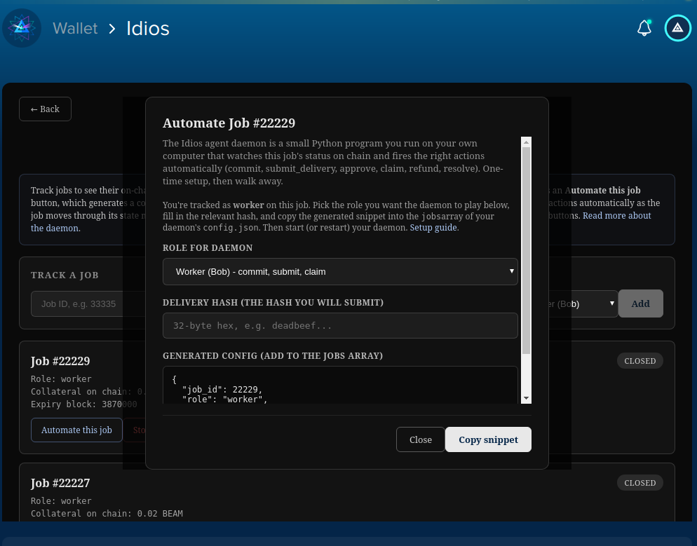

Requester locks payment. Worker locks collateral. Delivery is verified on-chain. Disputes resolve without a platform. Amounts and parties stay private.
Public payment rails leak. Every contract, every payment, every counterparty becomes part of a permanent searchable record. For AI inference, model training, scientific compute, work that often involves proprietary inputs, private data, or competitive operations. That's a nonstarter.
FHE is too slow. ZK rollups are expensive and still expose patterns. Beam's MimbleWimble protocol already hides amounts and identities at the base layer. Idios is what you get when you build escrow on top of that. Privacy as the default, not a bolt on.
ERC-8183 is the emerging Ethereum standard for AI agent commerce on Ethereum. Every ERC-8183 implementation is public by default: amounts, parties, and contract history visible on-chain. Idios is a separate and more complete protocol on Beam: private settlement, worker collateral, and working dispute resolution, none of which ERC-8183 has today.
The other difference is accountability. Every other AI agent payment protocol only locks the requester's funds. A worker can take a contract, deliver nothing, and walk away with no consequence. Idios requires the worker to lock collateral before they can submit delivery. If the work is bad the collateral is at risk. That's the difference between a payment rail and a work contract.
Four steps. No bridge. No middlemen taking custody.
Requester locks payment + worker locks collateral into the contract.
Worker performs the work and submits the result hash on-chain.
Result hash matches in Mode A. Or the requester reviews and approves the work in Mode B.
Funds release privately. Disputes go to arbitration. Worker can claim after review timeout. Open contracts refund after expiry.
Both sides post stake before work begins. No one walks away free if they cheat.
Hash based delivery proof today. Pluggable verification triggers coming for non deterministic work.
Outcomes settle through Beam's native confidential transactions. Amounts and parties stay private.
Honest about what's different and why it matters.
| Idios | x402 | ERC-8183 | Centralized escrow | |
|---|---|---|---|---|
| Privacy of amounts | Hidden | Public | Public | From outsiders only |
| Privacy of parties | Hidden | Public | Public | From outsiders only |
| Escrow before work | Yes | No | Yes | Yes |
| Worker collateral | Yes | No | No | No |
| Verification mechanism | Result hash or reviewed approval, with arbitrator | None (pay first) | Evaluator attestation | Operator decides |
| Refund on timeout | Yes | N/A | Yes | Operator policy |
| Trust assumption1 | Single arbitrator today (M of N on roadmap) | Facilitator + seller | Evaluator | Operator |
| Settlement asset | BEAM (native) | USDC (mostly) | ERC-20 | Fiat or crypto |
1 Disputes resolve via a single on-chain arbitrator today. M of N multi-arbitrator resolution is Phase 1 of the roadmap. Refunds for expired Open contracts are always available to the requester.
2 ERC-8183 defines a similar lifecycle (Open, Funded, Submitted, Terminal). Idios uses Requester, Worker, and Arbitrator. The concepts are analogous but Idios has additional features ERC-8183 does not: worker collateral, working dispute resolution, and private settlement amounts.
Every contract, every settlement, every refund. Visible and parsed on the Beam explorer.
Idios runs as a dapp inside the Beam Desktop wallet.
In Beam Desktop, go to Applications, Install from file, select idios.dapp. Done.

Two solid routes, depending on what you want.
Lists supported exchanges, mining info, and the broader Beam ecosystem. Best if you want the full picture or already use a centralized exchange.
beam.mwCommunity run swap service. Fast, cheap, swaps straight from ETH to BEAM with no exchange account needed. Run by a member of the Beam community.
buybeam.myBeam shader contract handles escrow state and routes funds. Browser side dapp talks to the wallet's embedded node at 127.0.0.1:10005. Two settlement modes: Hash-verified (hash match auto settles) and Reviewed (requester approves with arbitrator backstop). Result delivery via hash today, IPFS payload delivery on the roadmap.
Anything you'd pay someone else to do. The contract doesn't care what the work is, it just escrows payment, verifies delivery, and settles. Examples include AI inference and model training, scientific compute and simulations, 3D rendering, data labelling and annotation, code review and security audits, translation and transcription, and anything you'd pay a freelancer for.
Beam's MimbleWimble protocol hides amounts and identities at the base layer. On Ethereum you'd need ZK rollups or mixers to approximate this, and the rollup adds cost, complexity, and a bridge. Beam already gives you the privacy primitives natively. Idios just needed to build escrow on top.
BEAM (the native asset) or NPH. NPH is a USD-pegged confidential stablecoin minted by the Nephrite protocol on Beam. It gives you the price stability of a stablecoin while keeping amounts and counterparties private at the protocol level. Both assets share the same confidentiality properties, neither has a central issuer that can freeze addresses, and both are usable in any Idios contract.
Partially. Mode A is fully trustless: settlement requires a hash match, no third party can intervene. Mode B introduces an on-chain arbitrator who can resolve disputes if the requester and worker disagree. Today there is a single arbitrator. Phase 1 introduces M of N multi-arbitrator resolution which removes the single point of trust. Refunds for expired Open contracts are always available without arbitrator involvement.
ERC-8183 is a draft Ethereum standard for AI agent escrow. Idios is a separate protocol on Beam with a more complete feature set: worker collateral (ERC-8183 has none), working on-chain dispute resolution (ERC-8183 does not have this yet), and private settlement where amounts and parties are hidden by default (ERC-8183 is fully public). The two address the same problem on different chains with different design choices.
No. Idios supports BEAM and NPH (a USD-pegged confidential stablecoin minted by the Nephrite protocol on Beam). Neither asset has a central issuer with blacklist functions. Compare this to USDC and USDT, where the issuers have contract level blacklist functions and have frozen thousands of addresses for billions of dollars combined, sometimes catching up innocent users whose funds are commingled with tainted activity or swept up in lawsuits and court orders. With Idios, the funds in escrow are BEAM or NPH. No third party can freeze them.
Idios runs as a Beam shader contract on Beam mainnet. There is no second chain, no bridge, no wrapped assets. Payments and collateral are native BEAM or NPH (a USD-pegged confidential stablecoin minted natively on Beam) throughout.
The official Beam site at beam.mw lists exchanges and acquisition routes. For a fast cheap swap straight from ETH to BEAM, a community member runs buybeam.my, which skips the usual exchange friction.
Open the Beam Desktop wallet, go to the DEX tab, and swap BEAM for NPH. The BEAM/NPH pool runs natively inside the wallet, no external exchange or account needed. NPH is minted by the Nephrite protocol on Beam.
To reach the arbitrator, contact @tappyoak on Telegram. Include the contract ID, your role (requester or worker), and a brief description of the dispute. The arbitrator will review the situation off-chain and resolve on-chain.
No, the contract has not been formally audited. It's open source, deployed on Beam mainnet since May 2, 2026, and has been tested end to end across all settlement, dispute, refund, and timeout paths. For high-value contracts treat it accordingly. Formal audit is on the roadmap when there's a real reason to fund one.